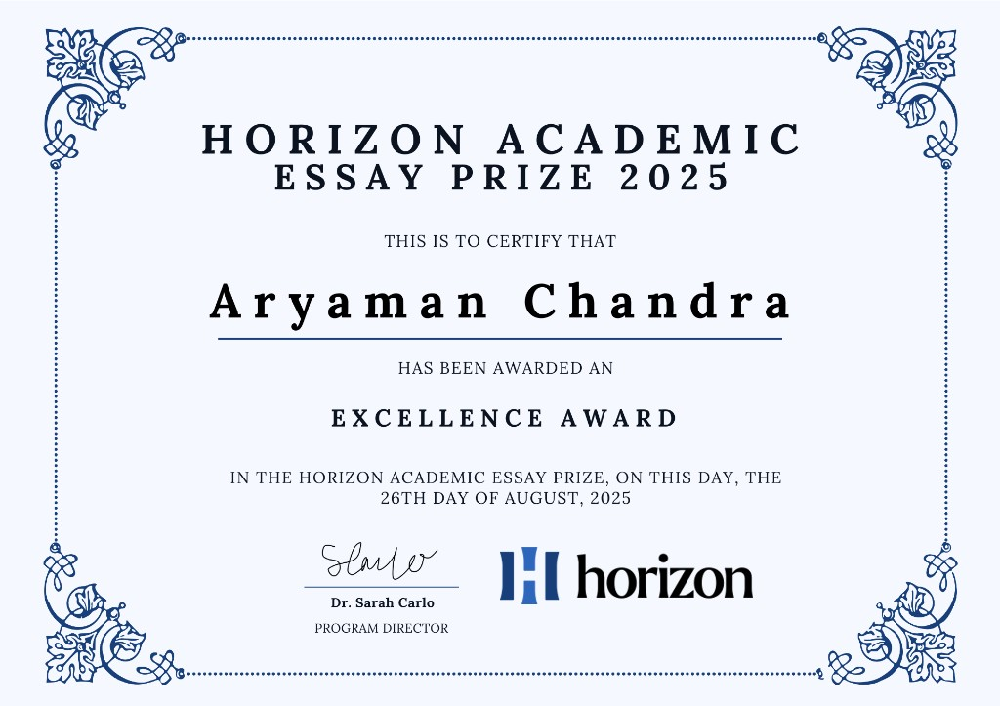
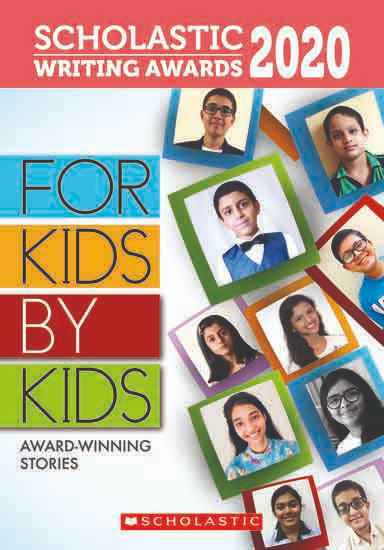

Horizon Academic Essay Prize 2026


I received an Excellence Award and qualified for the Horizon Academic Research Program with a $1,000 scholarship.
I was also shortlisted for the prestigious John Locke Essay Competition. Those essays are available on request.
Before any of that: in 4th grade I authored a piece published in Scholastic's national For Kids By Kids anthology. Four entries were chosen from the entire country that year. Mine was one of them.